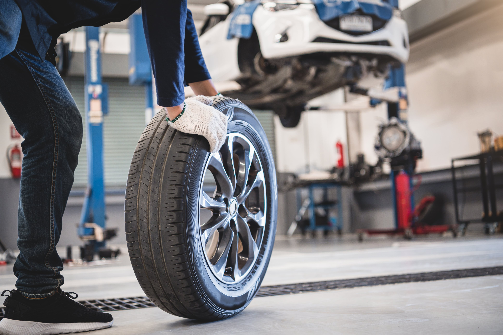

Tyres are the most important part of your car. It is these four pieces of rubber that protect you and your vehicle from the road. People often complain that they are expensive but think about how much protection they give you!
You don't have to spend a fortune on your car tyres in Pengam, Blackwood. Alan's MOT Centre promises to deliver quality but affordable priced tyres so that you can get back on the road in no time.
We believe in giving you the choice. We sell tyres from all the tyre manufacturers, including Goodyear, Dunlop, Pirelli, Bridgestone, Continental and Michelin to name just a few.
If you have a specific tyre manufacturer that you would like to use, we will be happy to use them on your vehicle. Those tyres that are not in stock will be ordered and often received the same day. All tyres can be fitted while you wait.
If you don't know anything about tyres and the confusing options, we'll be happy to talk you through them. When cost is the main priority, we will recommend the best quality within your budget. For those who decide quality out weighs cost, we will talk you through all the tyre options available.
The winters are getting harsher and can cause trouble for drivers. You can give yourself that extra protection by ordering winter tyres for your car. Like regular tyres, we have a range of options and will be able to go through all of them so you get the best for your budget. We can also talk about the benefits of having winter tyres and when to change back to your original ones.
This area of car maintenance is one that many people forget about. Many vehicles fail their MOTs because of their tyres. When changing them, Alan's MOT Centre technicians will talk you through proper maintenance and help you understand when the tread is thinning and the proper inflation levels of the tyres. Not only will your tyres last longer, you will improve the fuel efficiency of your vehicle.
Please contact Alan's MOT Centre today for more information on our range of premium and regular tyres in Pengam, Blackwood
Mon to Fri
09:00 - 17:00
Sat and Sun
CLOSED
01443
804458
Block 1 Unit A/3 Pinewood Court,
St Davids Ind Est, Pengam,
Blackwood, NP12 3SW